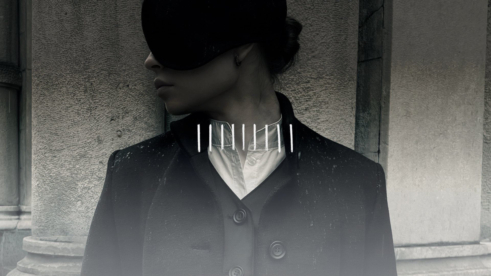
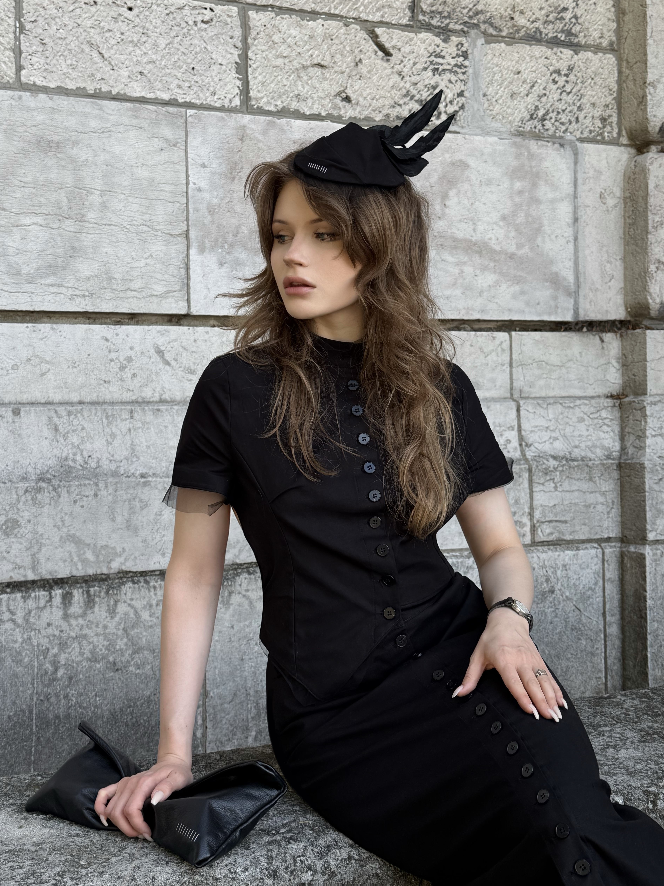
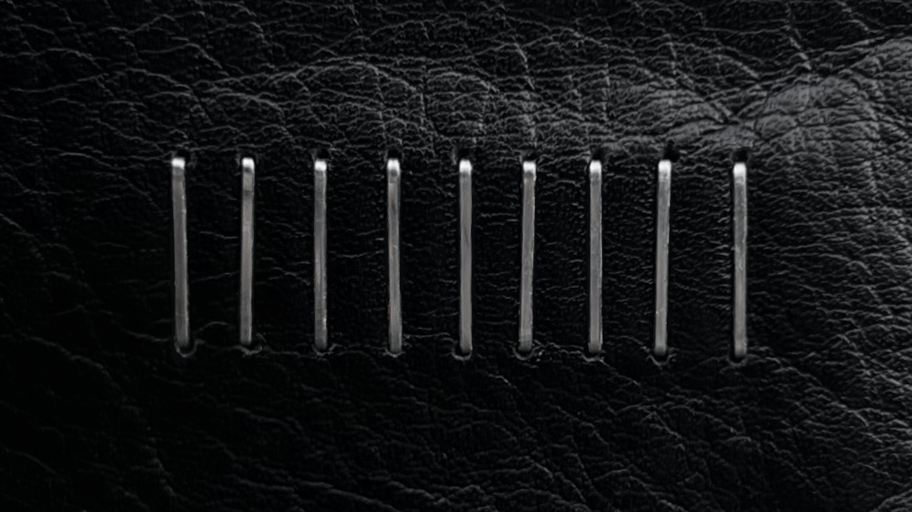

Диплом бакалавра с отличием
Специальность «Конструирование изделий легкой промышленности»

работа задаёт современность через нейтральные плоскости и архитектурный силуэт: высокая мода, объекты, съёмки и магистратура — как одна последовательная линия.

Дизайнер высокой моды и объектов. Съёмки, готовые изделия — головные уборы, сумки, обувь, одежда — эскизы и продуктовые решения объединены одной линией: чистая конструкция и плотный силуэт.
Лауреат премий, дипломы и профессиональные отборы. Сейчас — финальная стадия магистратуры по высокой моде: материал, показ и ремесло без декоративного шума.

Работа ведётся как редакционная серия: каждый проект — отдельный том с собственной пластикой и ритмом кадра. Меньше украшения, больше давления линии.
Специальность «Конструирование изделий легкой промышленности»
Конкурс дизайнеров обуви и аксессуаров
Фестиваль «Московская студенческая весна»
Международный конкурс письменных работ
Формат ролика: 9:16 (вертикаль) · без звука · work.mp4
Процесс
Слева — вертикальное видео 9:16 о процессе: ателье, детали, ритм работы. Справа — слайдер с опорными методами: от идеи и эскиза до объекта и съёмки. Листайте блоки ниже.
В каждой колонке — статичное превью из проектов этого направления. Нажмите на полосу — откроется окно с полным описанием и слайдером. Наведите — белая обводка.